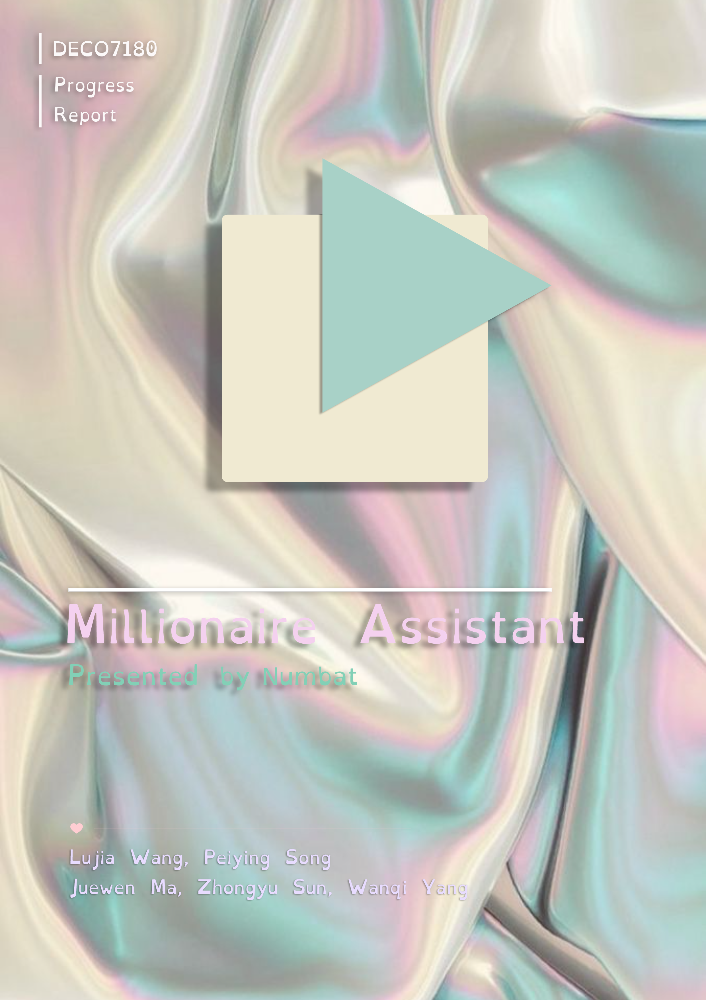
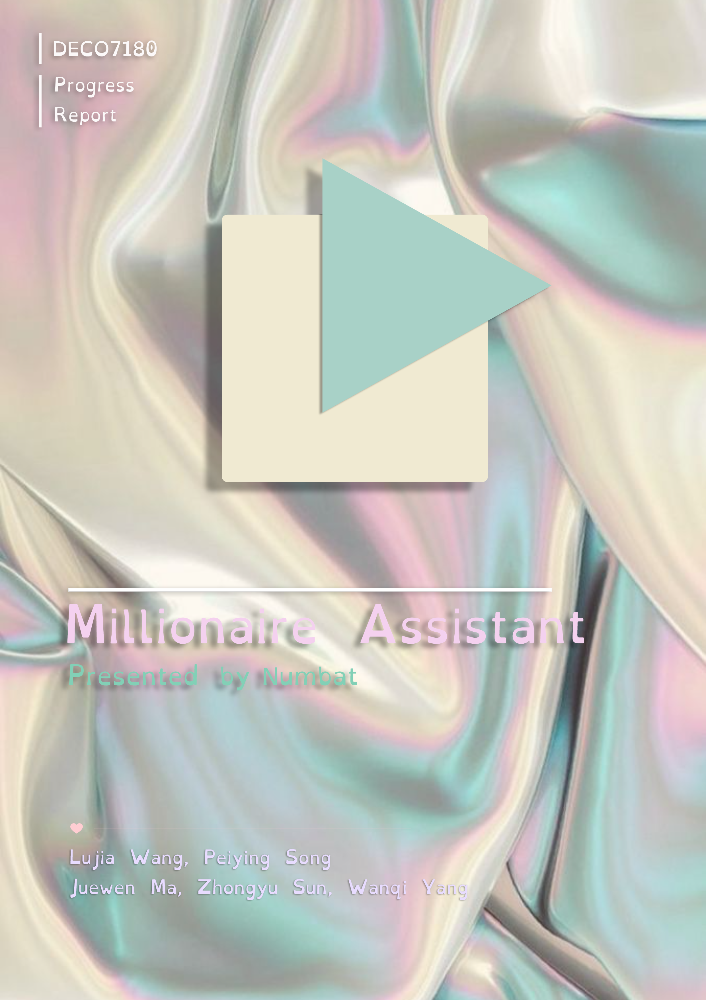

Millionaire Assistant
The website also provides consumers with food truck information on an interactive map.
Tool used: Miro, Figma, Adobe Photoshop, Adobe Illustrator, Visual Studio Code
What I did: UI Design, User Test, Graphic design for branding, Font end development
Duration: 23 August - 26 October 2021 as part of Course Studio Ⅰ :Interactive Technology at UQ
*Due to the COVID-19 lockdown, the project was completed in a remote mode. View the website

The background
The project required uncovering design-worthy data from a national or state government database and applying it to the interactive website. Our team's interest was piqued by the Food Truck data in the database. Our following background research revealed three points:- Extra government restriction on mobile food business
- Higher competition due to the adaptability of food truck's business models has
- The high demand for food trucks pushes business owners to seek higher incomes
Ideation & Positioning
Our prototype product was defined by the course requirements as the product had to be web-side and integrate the components of an interactive map. We started by defining our target users and base functionality after team meetings. The target users of our product will be food truck owners, with consumers being positioned as our peripheral users.Based on the type of data in the database, the main function of our website will be the algorithmic analysis of data to provide information to help business owners to better improve their revenue. Based on its proposal, Millionaire Assistant will be a business consulting website, not an information system website.
The food truck business is a mostly decentralized and self-employed type of small business. For the reason of that, our website is positioned as a lightweight business application, facing lightweight business needs.
Persona
Task Flow
Storyboard
Low-fidelity Prototype & Online User Test
*Due to the COVID lockdown, we are hard to find the target users to be our testers.
UI Design
Based on our Positioning and User Scenario, we abandoned the professional software design style, hoping that the Two-dimensional cartoonish and relaxed style would let users have a good start of their busy day. In the main page , we arranged our function buttons on the immersive interactive map component to highlight our geographic information-based service feature and to visually and intuitive communicate information to users.In this stage, I deeply involved in every part from style definition to UI design. And led the completion of the design principles to ensure the unification of the design.
Development
I am mainly responsible for the development of the Food Truck Page shown above, using PHP language for data reading.Graphic Design & Branding
I took full responsibility for the graphic design work in the team, completed some of the art resources for the project and built the visual identity of the project.*All third-party art resources used in the project have been licensed.


 


High-fidelity Prototype
View the website
View my course portfolio website
The above is the design and development process of the Millionaire Assistant, welcome to click the links to
experience
our high-fidelity prototype website, or please feel free to browse my other works :)